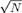
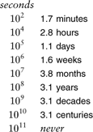
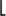
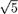
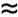
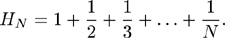
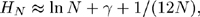
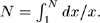
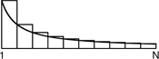
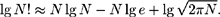

C++ Programming Robert Sedgewick - Princeton University Addison Wesley Professional Algorithms in C++, Parts 1–4: Fundamentals, Data Structure, Sorting, Searching, Third Edition
2.3. Growth of Functions
Most algorithms have a primary parameter N that affects the running time most significantly. The parameter N might be the degree of a polynomial, the size of a file to be sorted or searched, the number of characters in a text string, or some other abstract measure of the size of the problem being considered: it is most often directly proportional to the size of the data set being processed. When there is more than one such parameter (for example, M and N in the union-find algorithms that we discussed in Section 1.3), we often reduce the analysis to just one parameter by expressing one of the parameters as a function of the other or by considering one parameter at a time (holding the other constant), so we can restrict ourselves to considering a single parameter N without loss of generality. Our goal is to express the resource requirements of our programs (most often running time) in terms of N, using mathematical formulas that are as simple as possible and that are accurate for large values of the parameters. The algorithms in this book typically have running times proportional to one of the following functions:
1 | Most instructions of most programs are executed once or at most only a few times. If all the instructions of a program have this property, we say that the program's running time is constant. | log N | When the running time of a program is logarithmic, the program gets slightly slower as N grows. This running time commonly occurs in programs that solve a big problem by transformation into a series of smaller problems, cutting the problem size by some constant fraction at each step. For our range of interest, we can consider the running time to be less than a large constant. The base of the logarithm changes the constant, but not by much: When N is 1 thousand, log N is 3 if the base is 10, or is about 10 if the base is 2; when N is 1 million, log N is only double these values. Whenever N doubles, log N increases by a constant, but log N does not double until N increases to N2. | N | When the running time of a program is linear, it is generally the case that a small amount of processing is done on each input element. When N is 1 million, then so is the running time. Whenever N doubles, then so does the running time. This situation is optimal for an algorithm that must process N inputs (or produce N outputs). | N log N | The N log N running time arises when algorithms solve a problem by breaking it up into smaller subproblems, solving them independently, and then combining the solutions. For lack of a better adjective (linearithmic?), we simply say that the running time of such an algorithm is N log N. When N is 1 million, N log N is perhaps 20 million. When N doubles, the running time more (but not much more) than doubles. | N2 | When the running time of an algorithm is quadratic, that algorithm is practical for use on only relatively small problems. Quadratic running times typically arise in algorithms that process all pairs of data items (perhaps in a double nested loop). When N is 1 thousand, the running time is 1 million. Whenever N doubles, the running time increases fourfold. | N3 | Similarly, an algorithm that processes triples of data items (perhaps in a triple-nested loop) has a cubic running time and is practical for use on only small problems. When N is 100, the running time is 1 million. Whenever N doubles, the running time increases eightfold. | 2N | Few algorithms with exponential running time are likely to be appropriate for practical use, even though such algorithms arise naturally as brute-force solutions to problems. When N is 20, the running time is 1 million. Whenever N doubles, the running time squares! |
The running time of a particular program is likely to be some constant multiplied by one of these terms (the leading term) plus some smaller terms. The values of the constant coefficient and the terms included depend on the results of the analysis and on implementation details. Roughly, the coefficient of the leading term has to do with the number of instructions in the inner loop: At any level of algorithm design, it is prudent to limit the number of such instructions. For large N>, the effect of the leading term dominates; for small N> or for carefully engineered algorithms, more terms may contribute and comparisons of algorithms are more difficult. In most cases, we will refer to the running time of programs simply as "linear," "N log N," "cubic," and so forth. We consider the justification for doing so in detail in Section 2.4.
Eventually, to reduce the total running time of a program, we focus on minimizing the number of instructions in the inner loop. Each instruction comes under scrutiny: Is it really necessary? Is there a more efficient way to accomplish the same task? Some programmers believe that the automatic tools provided by modern compilers can produce the best machine code; others believe that the best route is to hand-code inner loops into machine or assembly language. We normally stop short of considering optimization at this level, although we do occasionally take note of how many machine instructions are required for certain operations, to help us understand why one algorithm might be faster than another in practice.
For small problems, it makes scant difference which method we use—a fast modern computer will complete the job in an instant. But as problem size increases, the numbers we deal with can become huge, as indicated in Table 2.1. As the number of instructions to be executed by a slow algorithm becomes truly huge, the time required to execute those instructions becomes infeasible, even for the fastest computers. Figure 2.1 gives conversion factors from large numbers of seconds to days, months, years, and so forth; Table 2.2 gives examples showing how fast algorithms are more likely than fast computers to be able to help us solve problems without facing outrageous running times.
Table 2.1. Values of commonly encountered functionsThis table indicates the relative size of some of the functions that we encounter in the analysis of algorithms. The quadratic function clearly dominates, particularly for large N, and differences among smaller functions may not be as we might expect for small N. For example, N3/2 should be greater than N lg2 N for huge values of N, but N lg2 N is greater for the smaller values of N that might occur in practice. A precise characterization of the running time of an algorithm might involve linear combinations of these functions. We can easily separate fast algorithms from slow ones because of vast differences between, for example, lgN and N or N and N2, but distinguishing among fast algorithms involves careful study. | lg N |  | N | N lg N | N(lg N)2 | N3/2 | N2 | 3 | 3 | 10 | 33 | 110 | 32 | 100 | 7 | 10 | 100 | 664 | 4414 | 1000 | 10000 | 10 | 32 | 1000 | 9966 | 99317 | 31623 | 1000000 | 13 | 100 | 10000 | 132877 | 1765633 | 1000000 | 100000000 | 17 | 316 | 100000 | 1660964 | 27588016 | 31622777 | 10000000000 | 20 | 1000 | 1000000 | 19931569 | 397267426 | 1000000000 | 1000000000000 |
The vast difference between numbers such as 104 and 108 is more obvious when we consider them to measure time in seconds and convert to familiar units of time. We might let a program run for 2.8 hours, but we would be unlikely to contemplate running a program that would take at least 3.1 years to complete. Because 210 is approximately 103, this table is useful for powers of 2 as well. For example, 232 seconds is about 124 years.

Table 2.2. Time to solve huge problemsFor many applications, our only chance to be able to solve huge problem instances is to use an efficient algorithm. This table indicates the minimum amount of time required to solve problems of size 1 million and 1 billion, using linear, N log N, and quadratic algorithms, on computers capable of executing 1 million, 1 billion, and 1 trillion instructions per second. A fast algorithm enables us to solve a problem on a slow machine, but a fast machine is no help when we are using a slow algorithm. | operations per second | problem size 1 million | problem size 1 billion | N | N lg N | N2 | N | N lg N | N2 | 106 | seconds | seconds | weeks | hours | hours | never | 109 | instant | instant | hours | seconds | seconds | decades | 1012 | instant | instant | seconds | instant | instant | weeks |
A few other functions do arise. For example, an algorithm with N2 inputs that has a running time proportional to N3 is best thought of as an N3/2 algorithm. Also, some algorithms have two stages of subproblem decomposition, which lead to running times proportional to N log2N. It is evident from Table 2.1 that both of these functions are much closer to N log N than to N2.
The logarithm function plays a special role in the design and analysis of algorithms, so it is worthwhile for us to consider it in detail. Because we often deal with analytic results only to within a constant factor, we use the notation "log N" without specifying the base. Changing the base from one constant to another changes the value of the logarithm by only a constant factor, but specific bases normally suggest themselves in particular contexts. In mathematics, the natural logarithm (base e = 2.71828...) is so important that a special abbreviation is commonly used: logeN ln N. In computer science, the binary logarithm (base 2) is so important that the abbreviation log2 N lg N is commonly used.
The smallest integer larger than lg N is the number of bits required to represent N in binary, in the same way that the smallest integer larger than log10N is the number of digits required to represent N in decimal. The C++ statement
for (lgN = 0; N > 0; lgN++, N /= 2) ;
is a simple way to compute the smallest integer larger than lg N. A similar method for computing this function is
for (lgN = 0, t = 1; t < N; lgN++, t += t) ;
This version emphasizes that 2n  N < 2n+1 when n is the smallest integer larger than lg N. N < 2n+1 when n is the smallest integer larger than lg N.
Occasionally, we iterate the logarithm: We apply it successively to a huge number. For example, lglg 2256 = lg 256 = 8. As illustrated by this example, we generally regard loglog N as a constant, for practical purposes, because it is so small, even when N is huge.
We also frequently encounter a number of special functions and mathematical notations from classical analysis that are useful in providing concise descriptions of properties of programs. Table 2.3 summarizes the most familiar of these functions; we briefly discuss them and some of their most important properties in the following paragraphs.
Table 2.3. Special functions and constantsThis table summarizes the mathematical notation that we use for functions and constants that arise in formulas describing the performance of algorithms. The formulas for the approximate values extend to provide much more accuracy, if desired (see reference section). | function | name | typical value | approximation | x | floor function | 3:14 = 3 | x |  x x
| ceiling function | 3:14 = 4 | x | lg N | binary logarithm | lg 1024 = 10 | 1:44 ln N | FN | Fibonacci numbers | F10 = 55 | øN=/ | HN | harmonic numbers | H102:9 | ln N + γ | N! | factorial function | 10! = 3628800 | (N/e)N | lg(N!) | | lg(100!)520 | N lg N –1.44 N | | | e = 2.71828... | | | | | γ = 0.57721... | | | | | ø = (1 + )/2 = 1.61803... | | | | | ln 2 = 0.693147... | | | | | lg e = 1/ln 2 = 1.44269 | | |
Our algorithms and analyses most often deal with discrete units, so we often have need for the following special functions to convert real numbers to integers:
x: largest integer less than or equal to x x: smallest integer greater than or equal to x.
For example, π and e are both equal to 3, and lg(N + 1) is the number of bits in the binary representation of N. Another important use of these functions arises when we want to divide a set of N objects in half. We cannot do so exactly if N is odd, so, to be precise, we divide into one subset with N/2 objects and another subset with N/2 objects. If N is even, the two subsets are equal in size (N/2 = N/2); if N is odd, they differ in size by 1 (N/2 + 1 = N/2). In C++, we can compute these functions directly when we are operating on integers (for example, if N  0, then N/2 is N/2 and N - (N/2) is N/2), and we can use floor and ceil from math.h to compute them when we are operating on floating point numbers. 0, then N/2 is N/2 and N - (N/2) is N/2), and we can use floor and ceil from math.h to compute them when we are operating on floating point numbers.
A discretized version of the natural logarithm function called the harmonic numbers often arises in the analysis of algorithms. The Nth harmonic number is defined by the equation

The natural logarithm ln N is the area under the curve 1/x between 1 and N; the harmonic number HN is the area under the step function that we define by evaluating 1/x at the integers between 1 and N. This relationship is illustrated in Figure 2.2. The formula

where γ = 0.57721... (this constant is known as Euler's constant) gives an excellent approximation to HN. By contrast with lg N and lg N, it is better to use the library log function to compute HN than to do so directly from the definition.
The harmonic numbers are an approximation to the area under the curve y = 1/x. The constant γ accounts for the difference between HN and ln 

The sequence of numbers
0 1 1 2 3 5 8 13 21 34 55 89 144 233 377 ...
that are defined by the formula
FN = FN–1 + FN–2, for N 2 with F0 = 0 and F1 = 1
are known as the Fibonacci numbers, and they have many interesting properties. For example, the ratio of two successive terms approaches the golden ratio ø = (1 + )/2 1.61803.... More detailed analysis shows that FN is øN/ rounded to the nearest integer.
We also have occasion to manipulate the familiar factorial function N!. Like the exponential function, the factorial arises in the brute-force solution to problems and grows much too fast for such solutions to be of practical interest. It also arises in the analysis of algorithms because it represents all the ways to arrange N objects. To approximate N!, we use Stirling's formula:

For example, Stirling's formula tells us that the number of bits in the binary representation of N! is about N lg N.
Most of the formulas that we consider in this book are expressed in terms of the few functions that we have described in this section. Many other special functions can arise in the analysis of algorithms. For example, the classical binomial distribution and related Poisson approximation play an important role in the design and analysis of some of the fundamental search algorithms that we consider in Chapters 14 and 15. We discuss functions not listed here when we encounter them.
Exercises |  2.5 For what values of N is 10 N lg N > 2 N2? 2.5 For what values of N is 10 N lg N > 2 N2?
| | 2.6 For what values of N is N3/2 between N (lg N)2/2 and 2N (lg N)2? | | 2.7 For what values of N is 2NHN – N < N lg N + 10N?
| |  2.8 What is the smallest value of N for which log10 log10 N > 8?
2.8 What is the smallest value of N for which log10 log10 N > 8?
| |
2.9 Prove that lg N + 1 is the number of bits required to represent N in binary. | | 2.10 Add columns to Table 2.2 for N(lg N)2 and N3/2. | | 2.11 Add rows to Table 2.2 for 107 and 108 instructions per second. | | | | 2.12 Write a C++ function that computes HN, using the log function from the standard math library. | | 2.13 Write an efficient C++ function that computes lg lg N. Do not use a library function. | | 2.14 How many digits are there in the decimal representation of 1 million factorial? | | 2.15 How many bits are there in the binary representation of lg(N!)? | | 2.16 How many bits are there in the binary representation of HN? | | 2.17 Give a simple expression for lgFN. | | 2.18 Give the smallest values of N for which HN = i for 1 i 10. | | 2.19 Give the largest value of N for which you can solve a problem that requires at least f(N) instructions on a machine that can execute 109 instructions per second, for the following functions f(N): N3/2, N5/4, 2NHN, N lg N lg lg N, and N2 lg N.
|
|